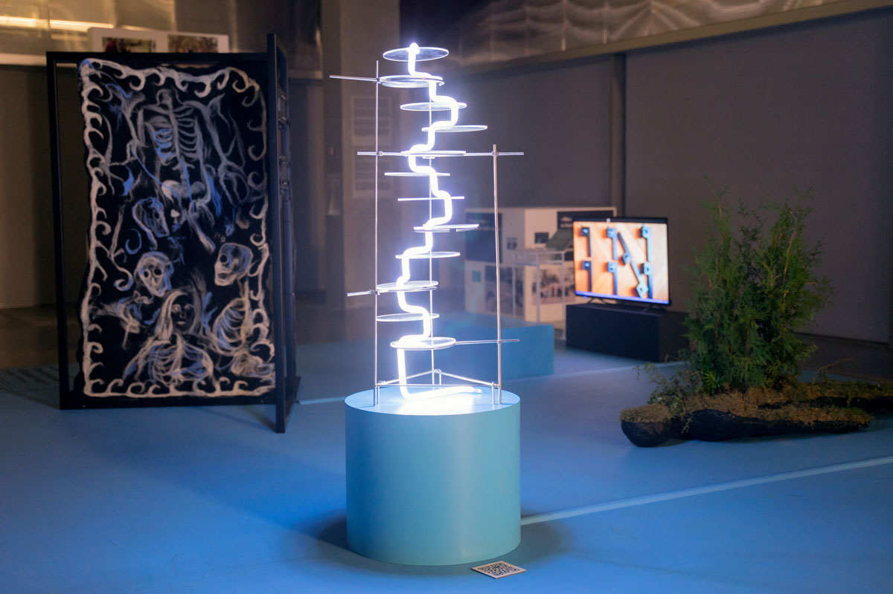
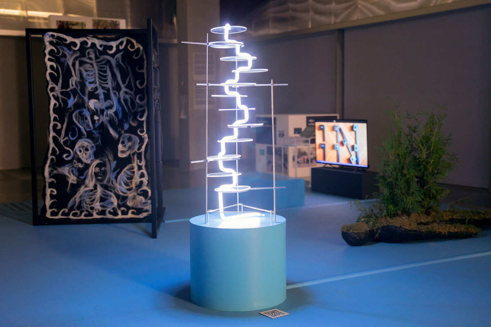

PORTFOLIO PAGE
framework homework
This project is about the interweaving of stories of different types of matter (pulsating matter-slime mold, brother of rattlesnake jelly), about different points of view on the same events. The resonance between our reality and his. Physarum as the oil absorbs other types of matter, but retains their survivability in itself, and therefore is a living antagonist of oil.Over time, holes are formed in the Earth's surface and in its history, which are left unexplored by most of its inhabitants. Because of its all-pervading nature, slime is able to find the dark and hidden places of history and connect them into a new narrative. Like an all-encompassing living something that preserves the knowledge of the absorbed.The slime mold acts as an archaeologist, raising events from the depths of the Earth's history before or even after their time comes, thereby violating the linearity of the flow of time.The starting point of the project is the appearance of blusting Jelly. Next, the story will unfold according to the slime mold's choice of one of the 12 events during the experiments.
 

This project is about the interweaving of stories of different types of matter (pulsating matter-slime mold, brother of rattlesnake jelly), about different points of view on the same events. The resonance between our reality and his.